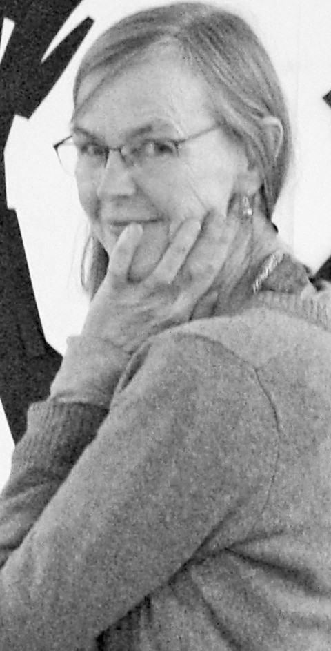

Petra Seeger, geboren 1960 in Hessen, ist freiberufliche Hebamme.
Ihren künstlerischen Werdegang hat sie, nach einigen Semestern an einer Fachhochschule für Gestaltung, durch viele Kurse bei dem Berliner Maler und Graphiker Martin Seidemann fortgesetzt.
Seit 2013 studiert sie bei Prof. Jo Bukowski Malerei.
Ausstellungen
- 2017 KULTURSTATION, WETZLAR
- 2016 FRAUENKULTURZENTRUM GIESSEN
- 2015 GALERIE RAUMWERKSTATT, WETZLAR
- 2013 HAUS DER DIAKONIE, WETZLAR
- 2013 ULLA TRIPP, FREIBURG
- 2010 GOLDSCHMIEDE UTE STROTHOTTE, BRAUNFELS
- 2010 WILHELM RECHTSANWÄLTE, DÜSSELDORF
- 2009 HERDERSCHULE, GIESSEN
- 2007 KANZLEI KLEYMANN, KARPENSTEIN & PARTNER, WETZLAR
- 2006 PRAXIS REMY & OPITZ V. BOBERFELD, BUSECK
- 2005 GALERIE HEDRICH, EHRINGSHAUSEN
- 2004 HEBAMMENKONGRESS, KARLSRUHE
- 2004 BIO-WEINLAGER, GIESSEN